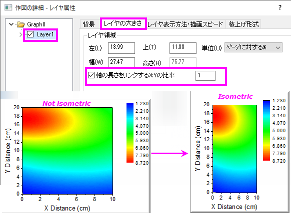
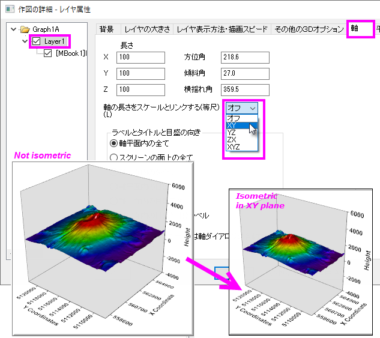

FAQ-111 軸の長さを等尺にするには？
axis-isometric
最終更新：2019/01/08
デフォルトでは、Originグラフの軸の長さはレイヤ寸法にリンクしているので、異なる軸が同じスケールに設定されても、同じ長さでは表示されません。
軸の長さを等尺にするために、軸の長さを軸スケール範囲にリンクすることができます。この設定は、以下のことが可能です。
- X, Y と/またはZ軸でスケールを1:1(または同一)に保持
- X, Y と/またはZのスケールを等しく（または同じに）する
- スケールと軸の長さの比率を保持する
- 同じXYスケールで正方形に表示する
- 軸の長さを釣り合いのとれた状態にする
軸の長さを軸スケール範囲にリンクする
- 2Dグラフの場合
- メニューのフォーマット：作図の詳細（レイヤ属性）を選択して作図の詳細ダイアログを開き、レイヤの大きさタブを開きます。軸の長さをリンクするX:Yの比率 にチェックを入れ、編集ボックスにデフォルトでセットされる1の値はそのままにしておきます。

- 3Dグラフの場合
- メニューのフォーマット：作図の詳細（レイヤ属性）を選択して作図の詳細ダイアログを開き、軸タブを開き、軸の長さをスケールとリンクする(等尺) のドロップダウンリストから選択します。

キーワード: 軸の長さ, 等尺, 正方形, 同じ長さ, アスペクト比, 均整な軸, 均整のとれたスペース, 釣り合った, 平方グリッド線, 固定スケール比